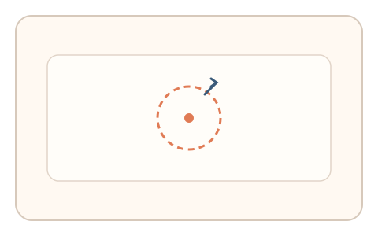
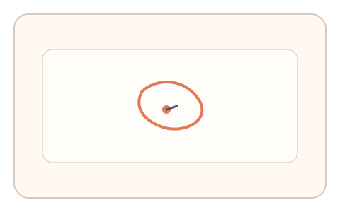
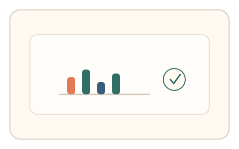

#96
Morphological Analysis - Combination Batches
已扩展
微回旋关闭
在 1 秒内画出闭合微回旋并停在中心点，以曲率分布与抖动谱验证真实性。
概念原文
用户在 1 秒内画出闭合微回旋并停在中心点，系统提取曲率分布与抖动谱并做异常检测。任务结构为瞬时任务，信号形态为轨迹动力学。
用“曲率‑抖动联合特征”替代图形正确性。
研究背景
短时闭合轨迹会暴露人类手部控制的曲率变化与微抖动特征。脚本虽可绘制几何闭合，但难以复现自然的曲率分布。
核心机制
- 提示用户在 1 秒内画出闭合微回旋。
- 要求停在中心点完成动作。
- 记录曲率分布、加速度与抖动谱。
- 与群体基线分布进行比对。
用户流程
- 步骤 1：用户看到回旋绘制提示。
- 步骤 2：快速绘制闭合回旋并停在中心。
- 步骤 3：系统分析曲率与抖动谱判定。
判定信号
曲率分布
人类绘制曲线时曲率变化具有稳定形态。
抖动频谱
微回旋包含生理噪声结构。
判定逻辑
曲率分布与抖动谱需落在人类区间；过度平滑或几何完美判异常。
对抗面
- 脚本绘制固定曲线
- 重放真实用户的回旋轨迹
防御与缓解
- 随机化回旋方向与大小
- 加入轻微动态扰动降低模板化
- 叠加停顿与速度信号进行多信号判定
可达性与风险
提供更大回旋与慢速模式，对手部障碍用户提供替代任务。
- 小屏设备难以精确绘制
- 采样率不足影响曲率与频谱质量
可视化状态

状态 1：回旋提示
提示绘制闭合微回旋。

状态 2：回旋绘制
用户快速绘制并停在中心。

状态 3：曲率判定
依据曲率与抖动谱判定。
参考资料
Motor control
说明动作控制与曲率变化。
Kinematics
说明轨迹动力学指标。